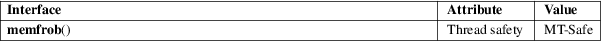

memfrob − frobnicate (obfuscate) a memory area
Standard C library (libc, −lc)
#define
_GNU_SOURCE /* See feature_test_macros(7) */
#include <string.h>
void *memfrob(void s[.n], size_t n);
The memfrob() function obfuscates the first n bytes of the memory area s by exclusive-ORing each character with the number 42. The effect can be reversed by using memfrob() on the obfuscated memory area.
Note that this function is not a proper encryption routine as the XOR constant is fixed, and is suitable only for hiding strings.
The memfrob() function returns a pointer to the obfuscated memory area.
For an explanation of the terms used in this section, see attributes(7).

GNU.
bstring(3), strfry(3)